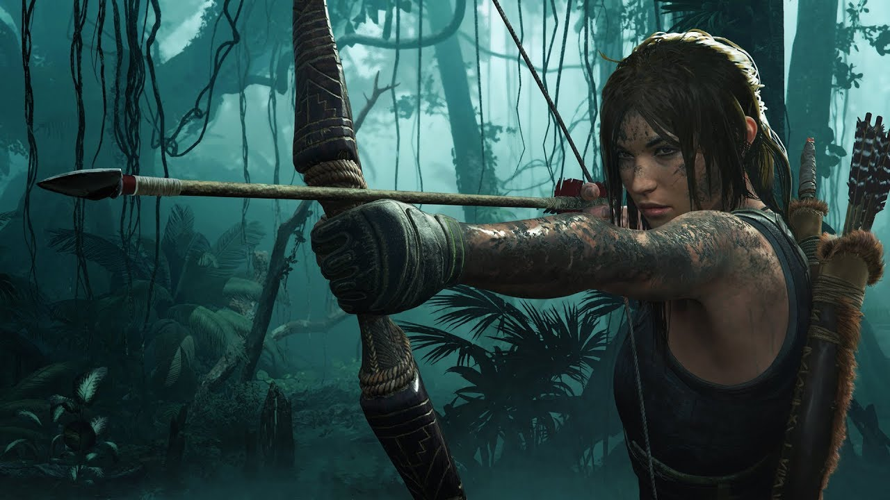

Bevezető
A Tomb Raider játékoknak nagy történelme van, a játék franchise már köztünk van 26 éve. A hangsúly mindig a lopakodáson volt, illetve a töménytelen mennyiségű rejtvényeken, amik a régi történelmi korok kincsét tartalmazzák pl.: inka kincsek. A játék kiadója a Square Enix.
A Shadow of the Tomb Raider egy third person shooter játék ami a harmadik része a 2013-as Tomb Raider és a 2015-ös Rise of the Tomb Raider sorozatnak, melyet 2018 szeptember 14-én adtak ki PC-re, illetve Playstation és Xbox platformokra.
Gameplay
A Shadow of the Tomb Raider egy akció-kalandjáték , amelyet third person mode-ban játszanak a játékosok átveszik Lara Croft szerepét, miközben Közép- és Dél-Amerika kontinenseinek környezetét fedezi fel. Az önálló területeken kívül a játéknak van egy nagy központja Paititi rejtett városában. Az új barter rendszer lehetővé teszi a játékosoknak, hogy a Paititit körülvevő területekről gyűjtött különféle erőforrásokat kereskedjenek és értékesítsenek.
Az úszás kezelőszerveit felülvizsgálták, mivel Lara a légzsákok bevezetésének köszönhetően hosszabb ideig képes visszatartani a lélegzetét a víz alatt. Képes lefelé repülni egy szikláról a mászóbárdja és a kötél segítségével. A lopakodás fontos, mivel Lara ki tud szakadni a harcból, amikor sárba álcázva, bokrokba bújva vagy sűrű növényzettel beolvadva elmenekül az ellenség látóköréből.
Elődeihez hasonlóan a játék lehetővé teszi a játékosok számára, hogy vadállatokra vadászjanak, anyagokat készítsenek az összegyűjtött erőforrások felhasználásával, rejtvényeket oldjanak meg, és opcionális sírokat és mellékküldetéseket keressenek. A játék nagyobb sírokat és összetettebb rejtvényeket tartalmaz az újraindítási sorozat korábbi részeihez képest. A játékosok személyre szabhatják játékélményüket, mivel a felfedezésnek, a rejtvényeknek és a harcnak saját nehézségi beállításai vannak. Az ellenségek ellen lehet használni egy úgy nevezett cover systemet, ami segítséget nyújt a játékosnak. Lőszert a földről vagy a halott ellenségektől lehet szerezni vagy kereskedőtől vásárolni. A játékos hozzáférhet egy fegyver inventoryhoz, amelyben checkpoint-nál tud váltani fegyverek között, de egy kategóriából nem tudsz többet magaddal vinni. E fegyverek némelyikével a játékos egyszerre kettőt is használhat, így előnyt szerez az ellenségekkel szemben, mivel kétszer annyi sebzést tud kiosztani. A játékos fejlesztheti a fegyvereit upgradek használatával, például egy assault rifle tárjának növelésével.
Kampány
Lara Croft és expedíciós partnere, Jonah Maiava figyelemmel kísérik az ellenséges csoportot, a Trinity-t, hogy megakadályozzák őket abban, hogy ősi, természetfeletti ereklyéken keresztül pusztítást szabadítsanak fel a világban. Lara és Jonah a mexikói Cozumel városába vezetik a Szentháromságot, és felfedezik a Pedro Dominguez, a Trinity Főtanácsának vezetője által vezetett műveletet. A város néhány távoli sírja után Lara feltár egy tőrt, amelyet maja apokalipszist ábrázoló falfestmények kísérnek, valamint utalások egy rejtett városra és egy „ezüstdobozra”. Lara figyelmen kívül hagyja a figyelmeztetéseket, és magához veszi a tőrt, hogy megakadályozza, hogy Trinity megszerezze, de Dominguez végül elfogja és ellopja a tőrt, tájékoztatva őt arról, hogy tettei egy sor eseményt indítottak el, amelyek a maja apokalipszishez vezetnek, amelyet „Tisztulásnak” neveznek. , ami a Nap halálát hozná. Mielőtt elhagyná őt, Dominguez kijelenti, hogy leállítja a Tisztítást, és a tőr és az ezüstdoboz erejével a maga képére alakítja a világot. Az apokalipszis első kataklizmája a Cozumelt elpusztító cunamival kezdődik. Lara és Jonah meg tudnak szökni.
Ők ketten félreteszik érveiket, és a perui Amazonasba utaznak. Útközben belerepülnek a második kataklizma okozta viharba, ami miatt gépük a dzsungel közepébe zuhan. Lara és Jonah túlélik, és Abby - egy helyi szerelő - segítségével végül eljutnak a Paititi néven ismert rejtett városba. Lara megment egy Etzli nevű fiút, aki történetesen Unuratu, Paititi királynőjének fia. A város két csoportra oszlik, amelyek közül az egyik egy kultusz, amelyet Pedro Dominguez irányít, akinek valódi neve Amaru. Mint kiderült, Dominguezt gyermekként Paititiből vitte el Trinity, miután visszatért, hogy a képére teremtse újra a világot. Történetesen Unuratu néhai férjének testvére is. Unuratu lázadást indít, amelynek célja, hogy megállítsa a kultusz befolyását a városlakókra. A kultikusnak öltözött Lara felfedezi a környező sírokat, és megtudja, hogy a tőr és az ezüstdoboz Chak Chel és Ix Chel istennők tulajdona volt. A doboz átszúrása a tőrrel kulcsként feláldozza Kukulkan isten szellemét, ami gyakorlatilag véget vet a Tisztításnak. Keresése során barlangban lakó humanoidokkal találkozik, akik számtalan Trinity-katonát mészároltak le. Később megtudja, hogy a lényeket Yaaxilnek hívják, és ők az ezüstdoboz őrzői. Sajnálatos módon, miközben egy mentőakción van, hogy megmentse Unuratut a kultikusoktól, Lara meghallja, hogy Dominguez azt mondja, hogy a dobozt egy 17. századi misszionárius lopta el, aki egy szomszédos faluban lévő San Juan missziójában rejtette el a dobozt.
A mentés során Unuratut lelövik, így Lara lesz felelős azért, hogy megtalálja a dobozt Dominguez előtt. Mielőtt meghal, Unuratu figyelmezteti Larát, hogy a doboz megpróbálja rávenni a használatára, de maradjon erős és álljon ellen a kísértésnek. Ő és Jonah San Juan missziójába utaznak, és egy rejtvényekkel teli katakombát tárnak fel az omladozó templom alatt. Megtalálják az ezüstdobozt, de Dominguez üdvözli őket, és elveszi magának. Hasonlóan korábban, Dominguez otthagyja Larát és Jonah-t, amikor egy újabb kataklizma következik be, földrengés és hatalmas sárlavina formájában. Ők ketten életben maradnak, és visszatérnek Paititibe, hogy megakadályozzák Dominguezt abban, hogy Etzli - a város új vezetője - és serege segítségével végezze el a szertartását. Miközben Lara és a legénység egy földalatti templom elleni támadást vezetnek, hogy megállítsák Dominguezt, Etzli erőit Trinity elvágja, így Lara magára marad. Ezzel egy időben vulkánkitörés történik; a negyedik és egyben utolsó kataklizma. Lara végül újra találkozik a Yaaxilekkel, akik szintén Trinityvel küzdenek. Találkozik Bíbor Tűzzel, a Yaaxil vezetőjével és Chak Chel szimbolikus ábrázolásával, és ők ketten egyesítik erőiket, hogy megállítsák Dominguezt, Lara pedig szimbolikusan Ix Chel lesz, az istennőkettő másik fele.
A Yaaxil végleg le tudja győzni Trinityt és a Főtanácsot, míg Lara megszállja Dominguezt. Kicsit későn érkezik a helyszínre, amikor Dominguez átszúrja az ezüstdobozt a tőrrel, megtöltve Kukulkan erejével. Miután a ceremónia részben megszakadt, Dominguez és Lara egy megemelt emelvény tetején harcol, végül Lara győzött.
Amikért szeretem
A harcok dinamikusak, intenzívek és változatosak. A combat mechanikák megfelelően vannak kidolgozva és szerintem kielégítik a játékost, sosem éreztem azt, hogy kell még valami a combatba. A lopakodás a kedvenc részem a franchiseban, de nagyon jó része a játéknak, tervezést igényel, de utána hatékony.
A narratíva és a karakterek a játék azon részei, amik a legjobbak. A történet okosan megírt, a szinkronszínészek kitűnő munkát végeztek, mindent bele adnak a szerepükbe. A főszereplőnek kellő mélységet adtak az írok,a magában zajló monológjai betekintést nyújtanak a gondolataiba, hogy könnyebben lehessen azonosulni és együttérezni vele.
A templomok felfedezése érdekes és érdekfeszítő. A vizuális dizájn pontosan megörökítette azt az időszakot, amelyben a játék során eljutunk, miközben hatékonyan ábrázolja a modern világot is. A szintek mérete elég nagy, változatosak és részletesek, szabad kezet ad a játék, hogy mivel és hogyan szeretnéd az ellenfeleket eliminálni. A hangokszintén kiemelkedőek, élethűen ábrázolja a természet hangjait és tökre olyan érzés, mintha a dzsungelben lennénk élőben is.
Végszó
Számomra a játék egy igazi gyöngyszem, a TPS játékok egyik legjobb képviselője, az ifjú Lara történetének záró része.